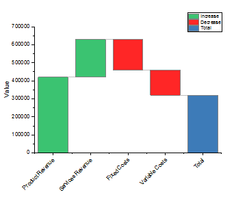
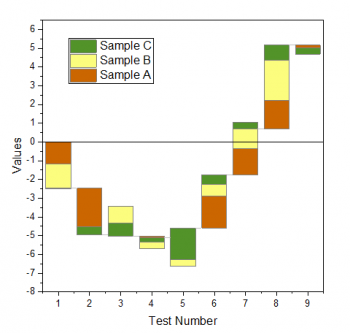
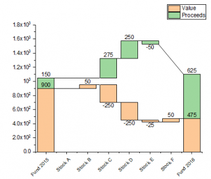
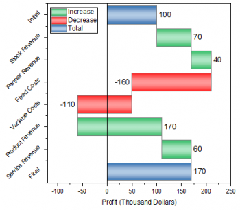

|  |  |
|
|
|
|  |  |
|
|
|
1つまたはそれ以上のY列（あるいは、Y列内のある範囲）を選択します。関連付けられたX列がある場合、それを使用し、そうでない場合は、サンプリング間隔を参照するか、行番号を使用します。
データを条件付けする場合は、LabTalk diff()機能を使います。
目的のデータを選択します。
作図> 統計：滝グラフ/積み上げ滝グラフ/ 積み上げ合計滝グラフ/平行滝グラフの何れかを選択します。
(Originのプログラムフォルダにインストールされています。)
BridgeChart.otpu
StackedBridgeChart.otpu
StackedTBridgeChart.otpu
HorizBridgeChart.otpu
作図の詳細ダイアログの滝グラフタブで、滝グラフの項目の編集が可能です。
また、ラーニングセンター(F11キーを押すか、ヘルプ: ラーニングセンターを選択)で、Originで作図可能な滝ブラフのサンプルを確認できます。